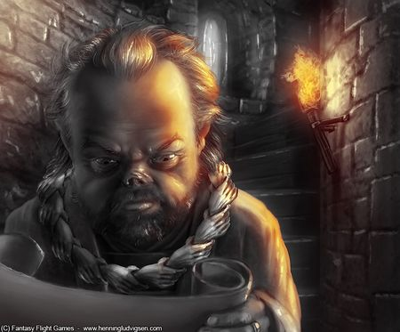

提利昂·兰尼斯特
| 提利昂·兰尼斯特
"Tyrion Lannister" |
|
|---|---|
|  | |
| 基本信息 | |
| 别名 |
小恶魔 半人/半人提利昂 Boyman 耶罗 胡戈·希山 |
| 头衔 |
前御前首相 前财务大臣 |
| 势力 |
兰尼斯特家族 次子团 |
| 宗教 | 七神信仰 |
| 出生 | 273AC,出生于凯岩城 |
| 人物关系 | |
| 配偶 |
第一任：泰莎 第二任：珊莎·史塔克 |
| 恋情 | 雪伊 |
| 好友 | 波隆 |
| 不和 | 瑟曦·兰尼斯特 |
性格和外貌
提利昂非常喜爱读书，善于思考，富有谋略。但是由于他天生畸形，出生时还导致母亲难产死亡，所以父亲泰温对他似乎缺少与詹姆同等的关爱与尊重。他跟哥哥詹姆的关系很好，但是跟姐姐瑟曦的关系非常糟糕。虽然出身高贵并且富有权势，畸形的身材仍然给他带来了许多问题和困扰。提利昂对敌人凶残，但是对和自己有着类似境遇而遭受歧视的人时常怀有同情之心。他说话尖酸刻薄，一针见血，不留情面，往往因此而得罪别人，有时也会为自己招来祸患。
提利昂是一个侏儒，双腿粗短畸形，多次在疲惫时抽筋，头大得不合比例，前额突出，容貌丑陋，两只眼珠一黑一碧，一头长直头发几乎金亮成白，下巴上长着褐色和金黄色交错的胡须。在黑水河之役中，提利昂受了几乎致命的重伤，被削去了半个鼻子，留下了无法复原的疤痕。
历史
提利昂是泰温公爵和乔安娜夫人的第三个孩子，他的哥哥和姐姐是比他年长七岁的双胞胎，詹姆和瑟曦。母亲在生他的时候难产而死，父亲因此归罪于他，并且认为他的畸形是诸神对自己的惩罚。提利昂感觉自己从未得到一个正常的家庭生活，尤其是从童年时代便遭受父亲和姐姐深深的伤害。
提利昂十三岁的时候，和哥哥詹姆从几个强盗手里营救了一个农家女孩泰莎，当詹姆去追赶强盗的时候，提利昂在一旁照顾泰莎。非常意外的是，泰莎因此爱上了他，并和他发生了关系。提利昂对她非常着迷，以至于花钱收买了一个修士主持他和泰莎的秘密婚礼。然而，他们的幸福仅仅持续了两周，随后便被泰温得知了结婚的消息。泰温公爵命令詹姆欺骗提利昂，泰莎只是一个妓女，是詹姆花钱雇来让他体验男女之事的。因为这个“妓女”竟然想要嫁给一个兰尼斯特，泰温便让提利昂眼睁睁地看着守卫每人支付一个银币后轮奸了她。在所有的士兵之后，轮到了提利昂，泰温公爵为他支付了一个金币，因为兰尼斯特的出价比一般人要更高。
提利昂十六岁时想要效仿叔叔们十六岁时那样造访九大自由贸易城邦，但最终因为父亲认为这会使家族蒙羞而不被允许。他还打发提利昂去清扫凯岩城内所有的阴沟水槽。
语录
| “ |
提利昂
：“那么私生子小弟，让我给你一点建议罢。”“永远不要忘记自己是什么人，因为这个世界不会忘记。你要化阻力为助力，如此一来才没有弱点。用它来武装自己，就没有人可以用它来伤害你。” 琼恩 ：“你又知道身为私生子是什么样了？” 提利昂 ：“全天下的侏儒，在他们父亲眼里都跟私生子没两样。” |
” |